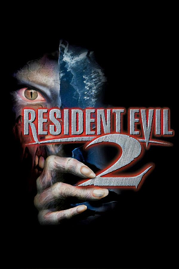

Horror · 1998
Resident Evil 2
Two scenarios through one police station, and Leon's very bad first shift.

Cover: Wikipedia: Resident Evil 2
Facts
- Released
- 1998-01-21
- Genre
- Survival Horror
- Category
- Horror
- Platforms
- Nintendo, PC, PlayStation, Sega
- Developers
- Capcom, Factor 5, Rockstar San Diego, Tiger Electronics
- Publishers
- Capcom